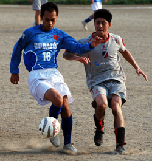
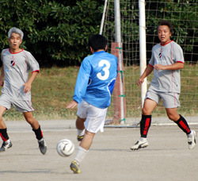
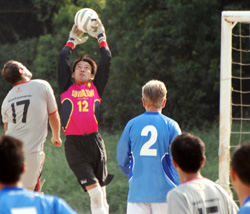

|
OiFuto, Saturday 25th August,
It was a blistering hot day at Oi-dirt (this pitch isn’t getting any better with age) that seemed to sap the energy out of you when standing still. Barbarians were a bit tentative after such a long lay-off, especially when the first fixture saw them drawn against a younger, fitter KGFC side.
The Barbarians apprehension was soon realized to be misplaced as the defense settled into there usual solid shape, soaking up everything KGFC could throw at them.
KGFC certainly had the legs and kept the Barbarians under pressure for most of the game, but the Barbs were looking dangerous on the break. A solid run down the right flank by Muramoto followed by a great ball fizzed across the 6 yard box saw Toshi connect with his head 15 minutes into the first half, 1-0.
Five minutes later saw KGFC with a great chance 10 yards out, but only to hit the foot of the left post. Another good attacking move from KGFC ended with a powerful goal bound shot that (in Dave’s words) moved three times on the way (nice balls Sid) but Dave got both hands to it and pushed it over the bar for a spectacular save.
5 minutes before the interval, some nice passing between the mids, onto John and from John a sublime ball to put Toshi through with only one defender and the keeper to beat. The dynamo left the defender eating grass (oh we should be so lucky!), neatly rounded the keeper and slotted home his second.
In the second half, KGFC continued to have the larger share of possession but were unable to convert anything past a solid defensive showing from the Barbs, they hit the post, hit the bar and everything in between was held onto by the impressive Dave.

15 minutes into the second half, Toshi was brought down in the KGFC box to win a penalty, only to see the direction guessed correctly by the keeper and a nice save made.
It wasn’t over though as Richard heaved himself out of his wheelchair with his one good hand crying “I scored last week three times and it was no fluke, I’ll score this week if you whippersnappers will play me!” (40 year old whippersnappers, how old is this man?). True to his word, Richard clawed his way into the box to get on the end of a rebound and thumped the ball home 3-0!
All in all a good day out that saw the Barbs continue on with their style of counter-attack football. Who else will fall prey to the Barbs “rope-a-dope*” this season?
Report by Clarke Robertson
|